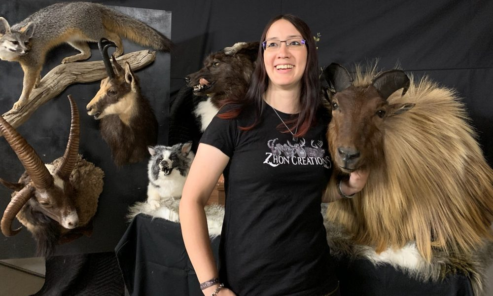
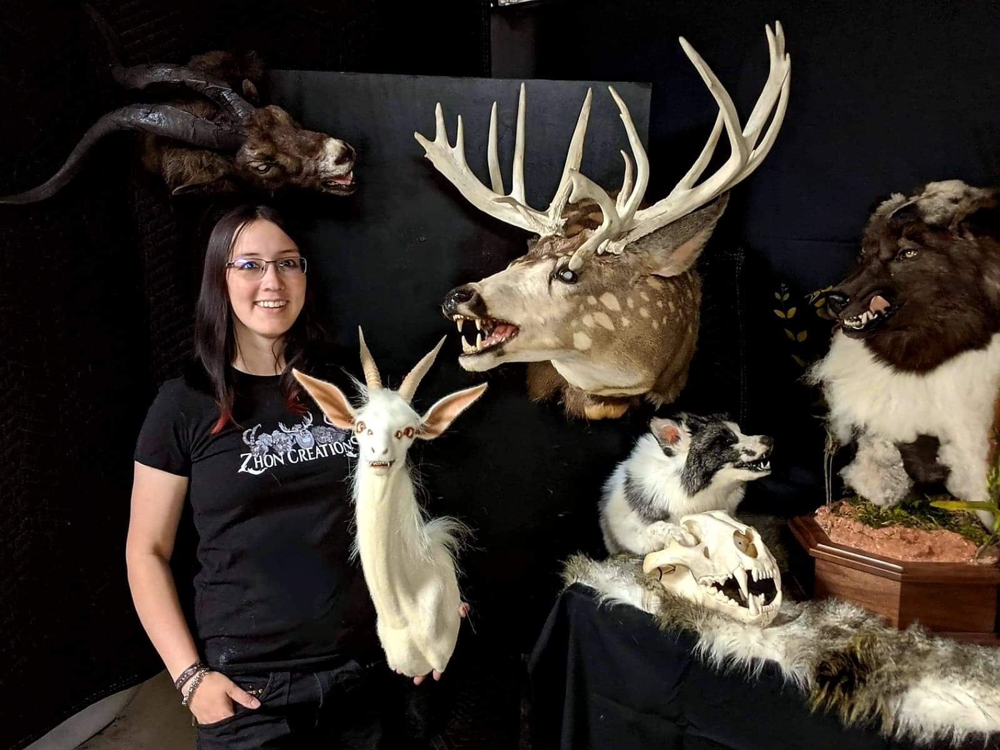

Meet Lee Duckworth of Zhon Creations in Arapahoe County
Originally posted in VoyageDenver on November 4, 2019

Today we’d like to introduce you to Lee Duckworth.
Thanks for sharing your story with us Lee. So, let’s start at the beginning and we can move on from there.
My name is Lee Duckworth (commonly known by the nickname “Zhon”). I was born in the center of Colorado and I have always had an affinity for wildlife. I consider myself to have always been a bit of a nature lover, and that is one of the main reasons I pursued the career of taxidermy. I love to preserve the memories of the past! I attended the Pennsylvania Institute of Taxidermy in 2005 to learn everything I could about recreating and breathing a new life back into the animals I was given be them hunted, found, or raised. I learned everything from fish to birds, and my favorite specialty mammals!
Through the years, I have had the wonderful pleasure to not only work on native creatures, but also exotic species that people have rarely ever seen! Another aspect of the art that I also love is the ability to produce fantasy creatures. My work has also appeared on TV shows such as Bones, Vampire Diaries, and Outsiders.
We’re always bombarded by how great it is to pursue your passion, etc – but we’ve spoken with enough people to know that it’s not always easy. Overall, would you say things have been easy for you?
The journey hasn’t always been a smooth one. The taxidermy industry is fundamentally the same as the art industry, which many would view as a commodity. The true struggle is trying to make your presence known. Getting a start was definitely the hardest hurdle to overcome. I began working for a couple of other taxidermy studios, learning new styles and standards according to what they liked to see. It was sometimes intimidating catering to hunters, fishermen and the like because they know what they had harvested, and they have photos of a prized moment in their life. It all comes down to the taxidermist, the artist, to be able to preserve that memory for a lifetime. Absolutely no corners can be cut because you have to capture the beauty of nature as it is in the wild. The career of taxidermy is also a “feast or famine” type of job. You rely on your audience to provide you with work that will sustain you for a whole year. While hunting season brings in a few animals, the work doesn’t stop with the season when you want to be able to do what you love sustainably throughout the year. During what would be the lull season for most taxidermists, I use my spare time to create fantasy creatures out of spare parts or excess that trickles through. I have even taken my sculpting and upholstering skills into creating completely synthetic, faux taxidermy. With that, I am also able to cater to the audience that loves the idea of a realistic animal sculpture being in their house, without the looming feeling that it was something once living.
There was a time when I thought that “being a woman in a male-dominated working field” was going to be a tremendous hurdle to overcome, but as the time has been passing, I see a lot more women in the field exhibiting extraordinary skill! It feels good to not be alone in the world of taxidermy, and now that I have planted myself further in the industry, I realize that there were many others with exceptional talent before my view was opened and knowing that made my world so much brighter!
We’d love to hear more about your business.
I started up my brand called Zhon Creations for people who love to follow my work. I am known for and specialize in all things taxidermy and will always be recognized for my “rogue” fantasy work. People nationwide have bought everything from a traditional mount, soft mount “plush” taxidermy, novelties, rug work, head dresses, refurbish work, props, and rogue creations. I also attend a few conventions per year and put many of my pieces on exhibition for spectators to marvel at and even purchase. What I am most proud of would be the props that television show managers have reached out to me to make for them. I absolutely love new challenges and am always looking at taxidermy as something to possibly interact with.
I believe what sets me apart from other taxidermists is my willingness to go beyond the classical aspect of taxidermy and to put as much skill and engineering into a piece that makes it unique. I am always trying my best to find new ways to astound people with the liveliness of my animals.
What were you like growing up?
As a small child, my family was always moving around the country. I was somewhat of a “wild child” that could always be found playing in the fields or woods, making stick forts and thinking I would someday live the life of a fairy tale princess. It wasn’t until my high school era that my family set roots into the town of Hanover, Pennsylvania that I really could recollect the growth of myself. Due to moving around a lot, I found it hard to keep friends in the states that I left. I was a mostly quiet kid in school with a small handful of close friends that shared many similarities. The down-to-earth artsy type, or the science nerds, and kids who loved to be outdoors. I had thought that I would get more into a science field of education because I excelled in biology. It wasn’t until I began advanced sculpture in art class that I found my true love of sculpting the creatures in nature or the monsters in fantasy lore. In my senior year, someone had told me that I could get scraps of fur and leather for my sculptures from a taxidermy shop. Ironically, the shop that I found closest to me was called “Unicorn Taxidermy,” and once I set foot in the studio and saw a big taxidermy unicorn staring right at me, I knew that this was what I wanted to do!
